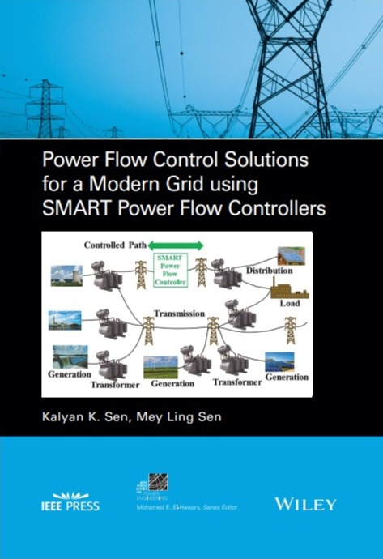

Additional Reading
Featured Publications
Introduction to FACTS Controllers: Theory, Modeling, and Applications
Author: K. K. Sen
ISBN: 9780470478752
A comprehensive resource introducing Flexible AC Transmission System (FACTS) controllers, their modeling techniques, and real-world applications. Suitable for students, engineers, and professionals in the power sector.

Power Flow Control Solutions for a Modern Grid Using SMART Power Flow Controllers
Author: K. K. Sen
ISBN: 9781119824381
This book presents proven methods for improving grid reliability and efficiency using SMART Power Flow Controllers. It’s ideal for grid planners, operators, engineers, and students in modern power systems.